Next: About this document ...
Up: midterm1
Previous: Please fill out the
Instructions
- Take home, open everything except discussion. Due Wednesday in class.
- Mark your start and end times. Don't spend more than 3 hours.
- Compare your print-out of the exam with the online version to make
sure your hard copy is complete.
- Mark your name and question number clearly on top of each page.
Indicate the total number of pages submitted.
- When solving a problem, list all the steps. In each step, describe
concisely what you are doing in English, then show the calculation
and the result of the step. A final answer, even if correct, without
evidence of the steps leading to the answer will not receive credit.
The Problems
- Problem 1. (33 points)
A DC generator of 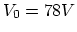 is connected through two wires each of
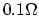 to two different loads, an electrical oven of 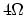
and a re-chargeable battery with voltage (leftover) 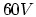 and internal
resistance 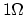. The schematic of this circuit is shown in the
figure below. Find
- power consumption of the electrical oven
- power loss caused by the internal resistance of the battery
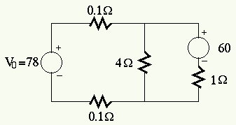
- Problem 2. (34 points)
Find the value of the load resistance 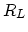 for it to get maximum power
from the voltage source.
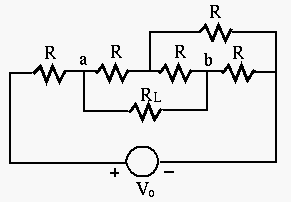
- Problem 3. (33 points)
The components in the circuit below take the following values:
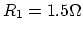, 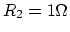, 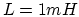, and 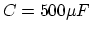. The voltage
source is
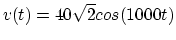. Find the two branch currents
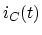, 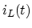 and the overall current
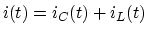.
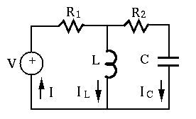
Next: About this document ...
Up: midterm1
Previous: Please fill out the
Ruye Wang
2004-10-07